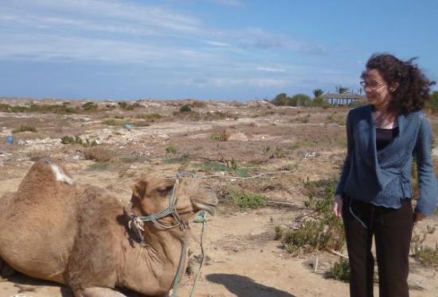

Christelle Aluome

I am a bio-informatics engineer with a particular expertise in data mining and database development.
Generally speaking, I am interested in everything linked with data mining: management, exploitation and analysis (especially for big volumes of data). I used to work in vegetable genomics, in diverse projects related to data mining, which includes database design (associated with the development of a website), analysis of sequences from NGS techniques (Populus nigra, Pisum sativum), the development of procedure for genome reconstruction (de novo assembly) in the case of small computing resources, and the development of protocols for the selection of SNP which can be applied to genotyping chip.
For the Integrative and Theoretical Ecology group, I have set up a web interface of spatialized metadata to favor interdisciplinary search (Geocatalog, which uses the European standard INSPIRE), and I now work mainly on two themes :
- The first topic concerns the exploratory analysis of long time series of birds in the Teich bird sanctuary.
- I also work also wetlands within the framework of the EPIZHONE project. I have worked on a synthesis document which lists the information available on existing data (human uses, ecology, hydrology, cartography,…) on the wetland zones in the Gironde Estuary and the Arcachon Bay.
I also take part in the creation and exploitation of GIS cartographic resources.
Since May 2017, I have been an information system administrator for the research unit ISPA (for Atmosphere Plant Soil Interactions), which is part of INRA. I have joined the ICOS project (Integrated Carbon Observation System), a European network that aims at monitoring the greenhouse gas balance in different ecosystems in and around Europe for 20 years. Within this research infrastructure, I coordinate leaf analyses and monitor the provisioning of resulting data to all partners. These analyses concern forests (pines, oak, beech trees…), meadows and cultivated lands (maize…) to determine their contents in elements such as phosphorus, nitrogen or carbon, and to estimate their change with time. I am also the website manager for ICOS-France.
Selected publications:
Al-Yaari A., Dayau S., Chipeaux C., Aluome C., Kruszewski A., Loustau D. & Wigneron J.-P. The AQUI Soil Moisture Network for Satellite Microwave Remote Sensing Validation in South-Western France. Remote Sensing. 2018, 10(11), 1839.
Aluome C, Aubert G, Alves Carvalho S, Le Paslier MC, Burstin J, Brunel D. De novo construction of a “Gene-space” for diploid plant genome rich in repetitive sequences by an iterative Process of Extraction and Assembly of NGS reads (iPEA protocol) with limited computing resources. BMC Research Notes. 2016, 9, 81.
Faivre-Rampant P, Zaina G, Jorge V, Giacomello S, Segura V, Scalabrin S, Guérin V, De Paoli E, Aluome C, Viger M, Cattonaro F, Payne A, PaulStephenRaj P, Le Paslier MC, Berard A, Allwright MR, Villar M, Taylor G, Bastien C, Morgante M. New resources for genetic studies in Populus nigra: genome-wide SNP discovery and development of a 12k Infinium array. Molecular Ecology Resources. 2016, 16(4), 1023-1036.
Tayeh N, Aluome C, Falque M, Jacquin F, Klein A, Chauveau A, Bérard A, Houtin H, Rond C, Kreplak J, Boucherot K, Martin C, Baranger A, Pilet-Nayel ML, Warkentin TD, Brunel D, Marget P, Le Paslier MC, Aubert G, Burstin J. Development of two major resources for pea genomics: the GenoPea 13.2 K SNP Array and a high‐density, high‐resolution consensus genetic map. The Plant Journal. 2015, 84, 1257-1273.
Rouard M, Guignon V, Aluome C, Laporte MA, Droc G, Walde C, Zmasek CM, Périn C, Conte MG. GreenPhylDB v2. 0: comparative and functional genomics in plants. Nucleic acids Research. 2011, 39, 1095-1102.